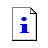
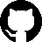
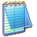

The page you are looking for is currently unavailable. The Web site might be experiencing technical difficulties, or you may need to adjust your browser settings.


To begin, click your user name
Computer is powered off.
 Command Prompt
Command Prompt
 Command Prompt
Command Prompt

 Notepad
Notepad